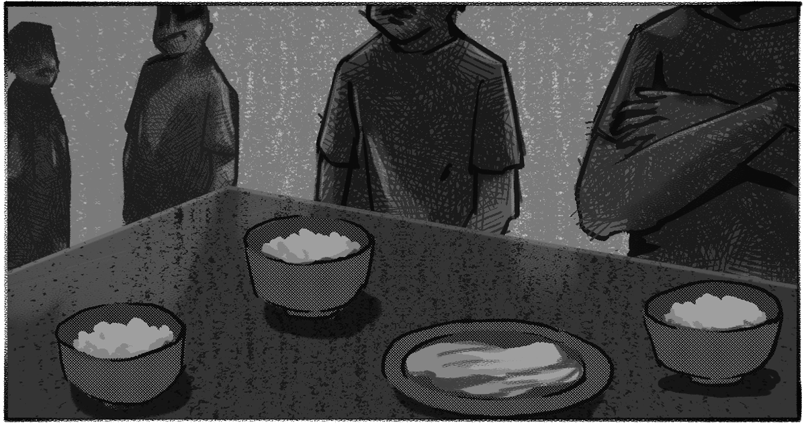

一年前，在青山灣入境事務中心（CIC）絕食抗爭的羈留者 K 說：「我哋唔係囚犯，但佢哋當我哋係囚犯。」
一年後，出乎所有人意料之外，不少 CIC 羈留者被轉移到懲教署管轄的羈留設施 — 「第一代智慧監獄」大潭峽懲教所。羈留者每人需配戴一條「智慧手帶」，一舉一動同時被全中心一共 170 個鏡頭監視。
在無處不在的監控中，K 已決定放棄免遣返聲請，回去位於非洲的家鄉，面對因由伊斯蘭教改信基督教，以「榮譽殺人」之名手刃其妻子的岳父一家。
這裡是繼青山灣入境事務中心後，第二個羈留《入境條例》下成年男性的中心。這裡截至 6 月 30 日有 67 名羈留者。《立場》耗時四個月，採訪 18 名大潭峽懲教所羈留者，絕大部份轉移自 CIC，其中逾十人於大潭峽曾遭單獨囚禁。
被投放至懲教署管轄的院所系統，加上全新的智慧監控，羈留者明顯水土不服，他們經歷了什麼？在《監獄條例》法例上的待遇，與入境處下的《羈留者待遇令》有何分別？有疑似癌症復發並患有脾臟腫大的羈留者嘆入境處拒絕釋放他，反而在疼痛時被短暫送到小欖精神病院；在署方所稱的「打鬥事件」後，有羈留者被送往赤柱監獄單獨囚禁，兜兜轉轉，奮力掙扎；無奈放棄聲請的羈留者等候多月，遣返無期⋯⋯沒有香港居留權，他們在等候遣返、法律程序或尋求庇護過程中，便被關起來，羈留本來已不知何日告終 — 而在智慧監獄在 27 間懲教院所全面推行前，他們自覺還成為香港人及政府的「白老鼠」。
智慧監獄的誕生
沿斜坡踏入 5 月 28 日啟用的大潭峽懲教所 — 這個「第一代智慧監獄」，看似與其他監獄毫無二致，唯一露出端倪的便是探訪登記室內的電子儲物櫃， 還有一人高的電子公告版，不斷循環顯示通知，包括「所有談話內容有機會被監聽；只有同意談話內容被監聽及錄音者，方可使用該電話筒。」上樓梯前往探訪室時，職員的櫃檯寫上「懲教一百載 智慧創未來」的口號。
「智慧監獄」一字，首先在 2018 年林鄭月娥的施政報告出現。
懲教署署長胡英明今年受多間傳媒訪問，披露由於 2017 年由於院所工作環境「好差」，與世隔絕，造成職員離職及調職率增加，遂於 2018 年正式制定方向，推出「智慧監獄」發展方向。胡英明又稱，計劃初期，懲教署與機電工程署合作，透過其發展基金，配對合適的科技公司，按署方構思，在各個院所測試新構建的科技系統，然後再由創新及科技局「科技統籌（整體撥款）」計劃取得撥款。
大潭峽懲教所在三千萬預算內完成翻新，胡英明稱是「奇蹟」，而啟用開幕儀式上，特首林鄭月娥亦有出席。
懲教署的「奇蹟」，偏偏選擇在羈留者身上試驗，而不少羈留者自覺成為「白老鼠」。
為何一所原本用於關押刑事性質囚犯的監獄，會改用於羈押行政命令下的羈留者？
保安局強調治安威脅 NGO 批「污名化」曾犯事羈留者
入境羈留的對象，包括無居留權而違反《入境條例》、或正等候遣返人士，包括非法入境者、非法勞工、以及尋求庇護者等，亦包括等候被遣返回國的外籍釋囚。
2014 年終審法院曾裁定，入境處行使羈留權力時，須遵守普通法的「Hardial Singh」原則，即是若入境處不能在合理時間內完成遣返或審核聲請程序，不能長期羈留某人。
關注尋求庇護者的非牟利人權組織 Justice Centre 高級倡議及傳訊主任張皓明解釋，相對刑事案件經法庭聆聽控辯雙方後作出、屬懲罰性的還押或監禁，入境羈留性質有別，「純粹係你要被遣返，你要被遞解離境。」他進一步指，根據政策考量，入境羈留屬於行政性質，而且未經任何律師代表討論，羈留決定如何影響當事人各項生活，只能在事後透過司法途徑上訴決定或補救，例如申請人身保護令等。
他強調：「入境羈留唔係刑事性質，亦唔應該有任何懲罰性。」
一月，
時任保安局局長李家超發網誌宣佈大潭峽懲教所將用於羈留設施時，已強調免遣返聲請人「有打黑工的、有涉嫌搶劫、販毒和傷人等罪行」，帶來治安問題，而一直積極探討用懲教署轄下的空置院所增加羈留名額。
今年就《入境條例》修訂的立法會討論上，政府稱：「對社會帶來較高治安風險的聲請人，當局原則上會在切實可行的情況下盡量羈留他們。 」入境處回覆《立場》查詢時，亦指羈留的考慮因素中，包括「該人是否曾犯嚴重罪行、會否對社會構成威脅或帶來治安上的風險、是否有機會潛逃或再次干犯罪行，以及其他因素例如其醫療情況等。」
張皓明觀察到，當局的說法一直強調「犯罪（criminality）」因素，「（當局說法）強調同犯罪連結，嘗試去合理化件事，改變公眾觀感，令啲人覺得佢係有罪之身，就唔值得同情同關注。」但事實上即使羈留者曾被定罪，亦已服刑完畢。
他強調，即使法律上容許以《監獄條例》管理羈留者，但行政羈留仍然不應是刑罰，「佢冇權去懲罰……你唔可以無端端困住一班人對佢差啲。」
CIC 關注組成員 Anna 認為，若羈留者有犯罪紀錄便不能獲釋，就等如「有罪假定」，又指政府已「污名化」免遣返聲請人多時，甚至透過《入境條例》修訂，合理化現有行政上延長羈留的做法，而個別媒體亦強次塑造「假難民」 、羈留者等同「暴力份子」的形象。
另一成員 Amy 批評懲教署刻意選擇大潭峽懲教所為「智慧監獄」試驗點，在囚犯身上全盤推行之前，先將一班羈留者當成「白老鼠」，「揀 CIC 一班最冇 support、社會最冇話語權嘅人，測試 run 唔 run 得好」。
稱無預警被上手銬 不知情送懲教所 羈留者：我唔係坐監
五月底，越南籍羈留者阿星（化名）是第一批被轉移的羈留者，在毫無預警下，當日被一批職員「夾上車」，他曾大聲呼喊：「我唔係坐監，我喺 CIC 等返去越南，點解要送我去第二個地方？」但沒有人回答，車停下，才知竟抵達懲教署轄下的監獄。
六月，《蘋果》曾報導，第一批在 CIC 的羈留者無預警被上了手銬轉移，入境處回應時否認並稱事前有通知羈留人士，截至 5 月 31 日，大潭峽懲教所內只有 9 名羈留者。
按懲教署數字，截至 6 月 30 日，大潭峽懲教所一共有 67 名羈留者。即一個月多了 58 人。
六月中某一天，清晨七點，在 CIC 被羈留十五個月的巴基斯坦籍 Hussein（化名）剛從 CIC 六人倉內睡醒，就有一個 officer 高呼：「呢個、呢個 number 一齊走！」他說，與其他人被叫號碼後，被押上手扣，在蒙面的職員看守下，約十個人押上一架車，另有職員拿着攝錄機拍下過程。
他說，有名高級職員甚至告知「今日你出冊」，教他疑惑。早兩三日，連他在內，四五十人分批已要做深喉唾液測試，大家心知肚明有機會「過界」，但未獲正式通知地點。入境處職員先把他們送到小欖精神病院，進行身體檢查，由懲教署職員接手，再送去大潭峽懲教所。
入境處回覆《立場》查詢有關安排，指羈留者進出中心均會接受當值醫生的醫療檢驗。
170 個鏡頭監視如廁淋浴 強制戴手帶「瞓得唔安樂」
與許多羈留者一樣，初嘗大潭峽懲教所無處不在的監控滋味，Hussein 第一感受是孤立以及「難捱」。該處的智慧監獄系統包括「在囚人士綜合智能通訊」 、「影像分析及監察功能」、「移動及位置監察功能」等。
根據懲教署資料，大潭峽懲教所早在去年及今年初，已安裝了「影像分析及監察功能 2.0」兩個系統，在一共七個活動室、囚倉以及球場，監控系統 24 小時運作，閉路電視不僅能夠識別面容，更可辨別自殺、打架及倒臥等動作，繼而作出警告，未來亦會新增測溫、計算人數以及追蹤在囚人士的功能。記者觀察，探訪室監控鏡頭上寫有「HIKVISION」，即全球最大視像監控設備製造商「海康威視」的商標，鏡頭具備面部識別功能 — 按《華爾街日報》報導，該公司是解放軍頂級供應商，去年被美政府禁止國民投資，
今年英國議會外交事務委員會亦發報告指其設備用於新疆再教育營，海康威視其後否認指控。
胡英明曾受訪指，院所內裝有一共 170 個監控鏡頭。據羈留者說法，不論是容納四至六人的日間活動室、集體寢室，甚至浴室，均裝有四個左右的監控鏡頭，更有鏡頭正對房內以一堵矮牆間隔的廁所，即使是單獨囚室，亦設有兩個鏡頭。
懲教署前年簡介「智慧監獄」概念時，曾展示鏡頭下的廁所會有某一位置「打格」，保障私穩，而錄像亦只會保留 31 天。
前年政府宣佈開展「智慧監獄」項目時，曾展示在廁格打格的監視鏡頭畫面。
與此同時，所有羈留者必須配載具防水功能的「智慧手帶」，監察心跳及實時位置，24 小時不准脫下，若果沒電，只在職員協助下，才能解鎖換上另一條手帶 — 有不願具名的羈留者稱手腕因此生了癬，「瞓都瞓得唔安樂」。
配合智慧手帶，在特定通道安裝的「移動及位置監察系統」則監察在囚人士實時位置，偏離原訂路線則即時發出警告。據署方年報，「在囚人士綜合智能通訊系統」配有語音識別關鍵字詞以及第三方通話偵測功能。
不過，多名羈留者表示對鏡頭及手帶的功能毫不知情，只能由職員及探訪者的片言隻語中得知，因此感格外不安，至今被羈留五年的越南船民武文雄質疑：「佢係咪濫用咗啲高科技？」
CIC 關注組成員 Anna 形容，被關在智慧監獄的羈留人士心情絕望，「一言一行長期被監視，無限期羈留嘅恐怖發揮得更極致」，加上對用在身上的資訊科技有巨大資訊鴻溝；本來堅持的前絕食者都有意放棄免遣返聲請，即使家鄉局勢未有改變也好，亦寧願被遣返，「外在壓力好大煎熬，影響成班人個情緒，大家都消化唔到」，另外外人探訪時因忌憚監控，亦帶來「寒蟬效應」。
《立場》曾向保安局查詢，手帶是否配備錄音及監聽功能，局方未有回覆。
房內「打飛機」被職員取笑 欲動手被獨囚兩周
越南籍羈留人士阿井（化名）在塘福懲教所完成服刑後，未有申請免遣返聲請，等待遣返回越南，至今已經一年。他形容，六月由 CIC 轉至大潭峽後某天，自己在倉內自慰，被一名懲教署職員透過監視鏡頭看見，並遭「唱通街」。其後因需索取信紙再跟該職員接觸，被對方無故問一句「你係咪打飛機」，他覺丟臉，一怒之下以粗口回應，欲動手也被同房制止，隨後被職員罰單獨囚禁兩星期。
「呢度好辛苦，乜都有鏡頭。」他慨嘆，即使在塘福被正式監禁，房內亦沒有安裝鏡頭，私隱尚有保障。「打飛機好小事，喺塘福都唔會笑，邊個都會打，係呢度咁痴線……但係呢度阿 sir 就會睇我做咩，我哋好尷尬，好辛苦。」
「好想返 CIC 嗰邊。」他嘆：「喺 CIC 冇鏡頭。我而家唔係坐監，真係好難捱。」
《立場》就事件向保安局查詢，局方未有回應。不願透露姓名的懲教職員 A 則向《立場》形容，相關職員「非常無聊」，自慰是男人的「基本需要」，即使職員巡查單獨囚倉看見成年在囚人士自慰，亦多數不予理會。他相信設立監控鏡頭，除了防止囚犯在巡邏空隙自殺，亦是一種取捨，「視乎你覺得管理抑或私隱重要，而署方睇法是管理較重要」。
「呢度係監獄 但你唔係囚犯」 政府：《監獄條例》適用
羈留者們很快發現，這裡名義上仍是羈留中心，運作上卻更像一所監獄 — 即使免遣返聲請個案等工作仍然由入境處職員負責，卻由懲教署職員管理。
巴籍羈留人士 Ishir（化名）曾經詢問懲教署職員，對方說：「呢度係監獄。」他反問：「咩罪名？我哋犯咗咩事？」職員僅僅搪塞過去，答道：「呢度係監獄，但你唔係囚犯。」
六月初，入境處個案主任前來會晤時，來自西非的 Nelson（化名）質問：「點解我被帶嚟呢度？冇犯罪就被帶入監獄？」對方給出不一樣的答案，「呢度係羈留中心，唔係監獄。」Nelson 不願放棄，追問：「如果呢度係羈留中心，點解我連羈留 number 都轉咗？啲人會咁樣控制囚犯。」Nelson 形容個案主任帶惱怒地說：「你唔聽我講，我就㩒鐘送你出去。」不一會，懲教署職員便進來，把 Nelson 帶走，結束會晤前，個案主任說：「你會一直留喺度，直到遣返為止。」
一月，
時任保安局局長李家超發網誌時強調，「被羈留於大潭峽懲教所的聲請人是按《入境條例》下被羈留，而不是《監獄條例》下的囚犯，待遇與被羈留在青山灣入境事務中心的人類似，這做法是現行法律允許，不需修例。」
保安局早前回覆傳媒，《入境（羈留地點）令》附表亦包括《監獄令》下的院所，「被羈留在兩個院所的人所獲得的待遇大致相同」。不過，翻查《入境（羈留待遇令》》，第 3 條指任何人羈留在附表的地點，待遇與還押人士一樣，「在作出必要的變通後，
《監獄規則》第 189 至 207 條即對該人適用」— 並不包括有關單獨囚禁的所有條文。
保安局及懲教署發言人再回覆《立場》查詢，才明確指出《監獄規則》第 2 條列明「適用於所有類別的囚犯」，包括第 188 (1) (ea) 條因《入境條例》被羈留的人。
換而言之，雖然大潭峽懲教所名義上為「羈留中心」，但實行的是《監獄規則》，與由入境處管轄的青山灣入境事務中心實行《入境（被羈留者的待遇）令》不同。
對羈留者而言，兩者重大分別是單獨囚禁時限。在《入境（被羈留者的待遇）令》條文下，羈留者非自願下最多可被隔離拘禁 7 天，而《監獄規則》除屬第 63 (1) (b) 條懲罰性的隔離囚禁有 28 日期限外，行政性質的並無上限 — 下文再述。
回看
2010 年立法會文件，保安局將青山灣入境事務中心由懲教署移交至入境處管理時的說法，就強調昔日以《監獄規則》管理，囚犯的基本待遇、外界通訊、投訴渠道，監獄紀律等，「較為規範及具約束性」，反之入境羈留者「將獲得相同或更寬鬆的待遇」，因此當年有必要小幅度修改《入境（被羈留者的待遇）令》。
關注囚權的前立法會議員邵家臻認同當年的立法原意，今日由行政角度主導思考，將羈留者交回去懲教處手上，無視當年的區別態度，是過於「武斷」，「事實上嗰班人唔係 prisoner（囚犯），你點可以用 prisoner 嘅生活水平對待佢哋呢？係唔應該㗎。」他批評，對羈留者的待遇，不應因不同部門就出現不同的執行方式，「無論你咩部門做，都應該係一樣。」
《監獄規則》管理羈留者 空間膳食減 埋下衝突因子
《監獄規則》規管在囚人士，《入境（被羈留者的待遇）令》 規管羈留者，在兩條法例下，兩種待遇有何分別？大潭峽懲教所衍生出的第三種待遇，實質上又如何落地？
懲教署管理下的囚犯
大潭峽懲教所懲教署管理下的羈留者
入境處管理的羈留者待遇
工作
在囚人士需要工作；還押人士毋須工作
毋須工作
不適用於中心
食物
監獄常規膳食；只有還押人士能夠在獲得院所主管批准後自費購買私人食物
監獄常規膳食
需供應足夠食物，並為被羈留者免費供應茶點，羈留者亦可自費獲其他食物，但需經人員檢查
衣物
囚犯獲供應衣物；未經批准不得管有任何物品
可身穿自己衣物
可身穿自己衣物
單獨囚禁/維持紀律
就已訂明的違反監獄紀律行為懲罰，如警誡或不超逾 28 天的隔離囚禁
按《監獄條例》執行
可被隔離拘禁最多7天
可命令中止囚犯與其他囚犯交往以維持監獄秩序
按《監獄條例》執行
在羈留者同意、及監督命令下，可移送到另一囚室以維持紀律
信件
懲教署交予囚犯前，可將其開啟、檢查及閱讀
不確定
羈留者將在入境處人員視線範圍內開啟信件，但人員不會閱讀有關內容
探訪
定罪人士每月兩次半小時探訪；還押人士每日一次15分鐘探訪，需事先「加名」
每日一次 15 分鐘探訪，需事先「加名」
每日一次 15 分鐘探訪，十月前可即時在接待處加名
來源: 綜合立法會2010年文件、《監獄條例》、《入境（被羈留者的待遇）令》及大潭峽懲教所羈留者所述
張皓明強調，羈留者陷入沒有期限的羈留中，本已承受重大心理壓力，待遇上種種微小的分別，日積月累，「可能聽落好小事，羈留期唔係一日，係五年，就會令身心健康好大影響。」
以饍食為例，《入境（被羈留者的待遇）令》第 6C 條規定 CIC 人員需供應足夠食物，並「為被羈留者免費供應茶點」，而羈留者亦可自費獲其他食物，但需經人員檢查。另外，
CIC 膳食由外判供應商提供，
按立法會財委會文件，截至今年二月，當局每日花在 CIC 每名羈留者的開支約 1106 元，當中膳食約佔 7%， 即約 76 元；至於監獄的在囚人士，
每人每日平均食材成本僅為 24.6 元 — 兩者相差三倍。
在大潭峽懲教所內，吃常餐的越籍羈留者阿牛（化名）張開手掌，比了比飯的大小，感覺「同監獄一樣」，而且飯量比 CIC 更少，白飯僅「一小團」，即使有雞肉和豬肉，「所有肉都得三塊」。「呢度食得唔飽，」他曾向福利官追問：「我哋一餐嘅重量幾多？幾多錢一日？」對方沒有答他，最終他是由報紙得悉問題答案。
行政署回覆《立場》查詢，六至九月期間，16 名太平紳士到大潭峽懲教所巡視，共 8 次，巡視期間共收到 4 宗投訴。有羈留者說，曾嘗試向太平紳士投訴食物質素，並邀請對方一同吃飯，不過被拒絕。
另外，羈留者每日獲一次 15 分鐘的探訪，CIC 訪客可即時在接待處「加名」，然後就可探訪（截至今年十月中），但在大潭峽懲教所，不僅羈留者的號碼換新，舊有訪客名單亦無法轉移，需要事前加名；CIC 位於屯門咖啡灣，亦是持「行街紙」人士定時報到的地點，大潭峽懲教所則位於港島東。種種因素下，來訪親友大幅減少 — 有羈留者甚至四個月來未獲探訪。
大潭峽懲教所重新開幕時，懲教署署長胡英明向特首林鄭月娥展示「在囚人士綜合智能通訊系統」。
大潭峽懲教所的日間活動室裝有一部白色的儀器，用智慧手帶一嘟，便可自助打電話，以及申請探訪者帶來的物品。但羈留者僅限於一周進行一次長五分鐘的本地通話，以及兩次共長十分鐘的海外通話，通通準時截斷。
除了一小時操場活動，羈留者每天由清晨七點半起，一共十二個小時，待在日間活動室。
阿牛不時瀏覽在懲教署認可的物品名單，看見有結他，便以智慧手帶嘟機申請 ，想着「學下音樂，冇咁悶」，甚至在懲教署監督和太平紳士巡查時，舉手詢問，孰料通通被拒絕。他嘆：「難捱過監房，有嘢做時間好快過，呢度除咗睇電視，冇嘢做。」記者向懲教署查詢不准入結他的原因，不獲回覆。
CIC 有能容納數十人的大房，分開非洲人、越南人等群體；大潭峽懲教所則是僅四至六人擠在細房，不分種族。阿星說以前在 CIC 大房可以來回踱步，「呢度連飯堂都好細」，時時需要正襟危坐，而唯一娛樂是電視，或閱讀。
CIC 和大潭峽日間活動室的重大分別，埋下各起事件爆發的誘因。
啟用三個月 三次打鬧事件 羈留者斥職員「小事化大」
《立場》整理，本年度懲教署涉及打鬥的 26 篇新聞稿中，有三宗跟啟用三個月之內的大潭峽懲教所有關，這裡比任何一間院所涉及打鬥的事件都要頻密。
三起涉及 12 至 24 人不等的集體罷食及抗爭事件 — 當中兩宗涉及羈留者，懲教署均有出動俗稱「黑豹部隊」的區域應變大隊，署方事後發稿稱事件涉「非法活動」，卻未有列明違反法律或《監獄規則》之處。反觀在壁屋懲教所，二月有 16 名還押人士打鬥，職員甚至未有出動胡椒噴霧等更高一級的武力。
懲教署於 8 月 19 日後發新聞稿，指大潭峽懲教所出現「非法集體行動」，出動區域應變隊、警衛犬隊及其他支援隊伍。
幾乎絕大部份打鬥事件均有轉介警方調查，例外是 6 月 20 日在大潭峽懲教所的事件，以及九月羅湖懲教所牽涉袁嘉蔚的集體事件 — 即使署方在後者的新聞稿中指控「企圖在院所內建立勢力」。
《立場》採訪多個涉及三起事件的羈留者，羈留者的版本相比官方說辭，時而大相逕庭。
越南羈留者阿星記得，6 月 20 日，他在日間活動室內看電視，想轉台卻發現沒有遙控，呼喊了幾分鐘，一班職員急匆匆地衝入內，高呼：「咩事？使唔使喺度嗌啊？的佢走！」阿星被帶往單獨囚禁室，其餘越南籍羈留者鼓躁，23 人隨即罷食早餐。武文雄同樣在場，憶述：「阿 sir 就話佢煽動其他人唔食飯，長期唔放返出嚟。」兩三日後，被帶走的阿星才知道原來有人罷食，他指在「水記」甚至被職員特意找麻煩，遭噴胡椒噴霧。他提出過報警，但福利官竟聯絡家人，勸他們等一等。他質疑：「職員就可以濫用權力，阿 sir 就有權打人？」懲教署及保安局發言人回覆《立場》查詢，稱不會評論個別個案，「如被羈留人士不滿在羈留期間的待遇，可向懲教署投訴調查組作出申訴」。
7 月 3 日，同樣在日間活動室，一名非洲人 Ifeanyi（化名）及越南人因各自有想看的電視頻道，又語言不通，想搶電視遙控器，爭吵起來，武文雄站在一旁嘗試勸阻，攔住越南人，怎料非洲人一拳揮出來，不過及時被其他人制止，無人受傷。當時職員由 CCTV 看見情況，已立即前來勸「唔好再嘈啦」，不過，一隊「黑豹部隊」職員立即衝進來，狂噴胡椒噴霧，活動室內有四個羈留者中了椒，需要用水清洗，武文雄的雙眼刺痛了一晚。
懲教署職員其後報警。「好小事化大，監房都成日爭執，但都唔係咁。」武文雄指，警察來到時，連口供也沒有錄，甚至有警員翻看錄像後，說「咁嘅事都報警」、「多數唔會告你哋，呢度慘過坐監」。
結果，由 6 月 20 日至 9 月 25 日，阿星被按《監獄規則》第 68B 條，單獨囚禁了足足三個月，「坐監咁一啲自由都冇，少少事就落水記。」而武文雄及 Ifeanyi 等人均被單獨囚禁近兩個月。 Ifeanyi 至今已被入境羈留 25 個月，曾坐監十年的他，亦不理解懲罰的時長，「我唔明點解我哋喺單獨囚禁室，我哋係朋友，一齊喺度受苦，所有人喺度都好大壓力。」
懲教人員受訓管羈留者 當外籍囚犯
無獨有偶，前述兩起事件，均是因日間活動室內，族裔語言的溝通問題引起。
對於懲教署而言，這群人是俗稱「O.N.（other nationalities）」的外籍囚犯。懲教職員 A 稱，得知同袍進入大潭峽工作前，需要受訓並學習相關的入境法例，每四五年能選擇調動職務，但不能選擇派駐地點。他認為，難民人數多，入境處難管理，而懲教署由於過去曾管理越南船民禁閉營，不抗拒接手，是因可擴大編制。《立場》曾向懲教署查問訓練內容及時長，以及有否就大潭峽懲教所的智慧設施另外制定指引，但均未獲回覆。
曾被囚的前立法會議員邵家臻指，一方面，懲教署前線職員「英文爛到不得了」，才對外籍囚犯普遍呼呼喝喝，用最短時間處理溝通問題，而如非洲外籍囚犯多數較頑固、越南人較團結，「嗰個火花好多時就著」，導致「張力比較重」，而另一方面，懲教署職員亦應以更冷靜的方法處理衝突，非「以爛渣制爛渣」。
「智慧監獄呢啲嘢就唔係技術上要智慧，係人腦需要智慧。」邵家臻形容大潭峽懲教所的環境「特殊」，面對另一種法例下的羈留者，需要另一種訓練或專才處理，而不能單以行政角度處理。例如小欖精神病治療中心的懲教職員，就需具備精神科護理訓練。
他又指，去年 CIC 爆發絕食事件後，管理層曾有所調動，「嗰班人佢哋管唔掂，就畀返懲教做⋯⋯懲教以一種更狠更嚴嘅效率去處理呢件事，所以就會再嚴啲囉，力度再猛啲。」
前因已種下，衝突一點就着，那麼後果呢？誰來承受？
《監獄條例》可無限單獨囚禁 特別室爆滿
據三名曾被單獨囚禁的羈留者估計，院所內每層有三間隔離囚禁室，共約有十至十二間，羈留者最短被困兩日，最長達三個月，現已人滿為患。
即使在特別室，亦有兩個監控鏡頭正對床以及馬桶，全天候監控，令羈留者倍感不安。
在 CIC，根據《入境（被羈留者的待遇）令》第 13 條，未經羈留者同意，隔離囚禁頂多七天為上限。
大潭峽懲教所卻行使《監獄條例》，除卻懲罰性質的第 63 (1b) 條有訂明 28 日上限，並且有上訴機制外，其餘行政性質的單獨囚禁並無訂立上限，亦無上訴機制。第 68B 條，限定為期不超過 72 小時，但如署長有合理理由相信為「維持秩序或紀律，或為任何囚犯的利益，該囚犯不應與其他囚犯交往」，可再命令中止囚犯與其他囚犯交往不超過一個月，可不斷續期 — 武文雄及阿星便是按第 68B 條，被單獨囚禁長達至三個月。
根據立法會 2015 年至 2019 年數字，單獨囚禁個案平均每年有四千多宗，在 2017 年達至頂峰後回落，懲罰性紀錄檢控比例由七成上升至 79% ，而按第 68B 條作出的比例逐年減少。
另一方面，抽取第 68B 條作出的非自願單獨囚禁時長數據顯示，72 小時以下的比例由最高七成跌至五成六，72 小時至一個月長的比例則由兩成上升至三成。
2015至2019年按《監獄條例》第 68B 條作出的非自願單獨囚禁時長比例
社區組織協會在 2019 年收到過百宗在囚及被羈留人士投訴，其幹事蔡耀昌多年來關注單獨囚禁，亦曾前往大潭峽懲教所探訪羈留者。他形容《監獄規則》第 68B 條為「尚方寶劍」，有時羈留者基於個人需要會主動申請隔離，但即使羈留者不同意也好，署方基於監獄利益等理由，仍可不斷續期，「延續到幾耐呢？就冇一個時限，有啲講緊幾年嘅」。
社協民權教育中心 2019 年出版《民間監察懲教制度周年報告》，指出懲教署提供的統計數據中，《監獄規則》第 58 條「所針對的報告已經作出的囚犯隔離」、第 68 條暫時囚禁、第 68A 條保護室的單獨囚禁數字，均沒有紀錄。
《民》報告引述研究指，超過 10 天隔離囚禁已導致負面影響，生理影響包括心悸、失眠、背部和關節疼痛、體重下降、腸道或心血管疾病、偏頭痛和疲勞；心理上，則有機會造成思維混亂、焦慮、恐慌、抑鬱、衝動、控制能力差、無故憤怒、緊張、不穩定、認知功能障礙等影響，尤其若不知隔離囚禁的限期，更會加劇無助感、焦慮和恐懼等情緒，嚴重更會出現精神病。
《立場》訪問的羈留者中，逾十人表示曾被單獨囚禁，其中有人因拒絕摺毛氈，便得四天處罰；亦有來自非洲的羈留者因不喜另一人抽煙，起了口角，便被罰入特別室約一星期。有曾在祖國遭受警暴的尼日利亞羈留者被單獨囚禁六天，期間被勾起創傷，噩夢連連，難以成眠。
蔡耀昌指出，羈留者被放入監獄，「有啲似還押」，形容整件事是「錯配」，懲教署慣常以管束犯人的手法，大力提高向羈留者的紀律要求，而且羈留者若坐過監，更清楚分別，變相種下先天性的問題，「反彈更大、不順從更大，咪製造更多衝突囉。」與入境處不同，懲教署「有晒成個（監獄）系統」，一間監獄的單獨囚禁室爆滿，還可把人調到第二間監獄作單獨囚禁。」
羈留者稱被職員圍毆 旁觀者罷食爭公道 懲教署：醞釀集體對抗行動
因大潭峽的單獨囚禁室爆滿，有羈留者竟被扔入高度設防的赤柱監獄。那得由第三起事件說起。
來自斯里蘭卡的羈留人士 Aayansh（化名）憶述，8 月 19 日，因排隊時不滿要留在原地等待，他想前行，被懲教職員抓住手臂。他質問原因，卻被約十名職員團團圍住，有一至兩人緊抓肩膀，有胡椒噴霧噴在他的雙眼及手臂上，視線模糊及痛楚間，他稱帶入一間職員室 — 「我知佢哋會打我，因為入面冇 CCTV」 — 隨即被㩒在桌上，然後被約六至八名職員毆打，一邊打， 一邊滾到地上。
Ishir（化名）親眼目賭，Aayansh 被團團圍住制服有兩分鐘，職員已有動手，事件令他不安且恐懼，「今日係佢俾人打，聽日就會到我哋。」其後，Ishir 與其餘約十人罷食早餐，舉手投訴毆打事件，終獲監督接見，反映事件始末。那時，Ishir 發問：「可否將我送回 CIC，或者遣返回家？」眾人並要求監督管理職員行為，監督隨即指「不用擔心」，稱屬自己的責任，並要求他們繼續食飯，他們亦願意「畀面」進食午餐，以為事件已落幕。

孰料，稍後就有大隊區域應變隊人員、警衛犬隊到達。Ishir 形容他們手持「槍械」，將十餘人逐個帶到隔離囚禁室。最後，連單獨囚禁室亦爆滿，需要兩個人關在同一間房。
Aayansh 的右眼嚴重瘀黑，足足四日無法張開，右鼻樑腫起，而左肩及胸亦痛，被帶走後，他先是被送到駐院所醫院，然後立即被單獨囚禁。其後才知道其他羈留者曾為他罷食。
懲教署當日下午出稿，將事件形容為「醞釀集體對抗行動」，Ishir 不同意，「我哋從來冇組織，係個人事件。」
罷食事件後一天的下午，十二名被隔離囚禁的人中，四個人可以返回日間活動室，有四個人留在大潭峽懲教所單獨囚禁，而出乎全部人意料之外的是，其餘四人被送到赤柱監獄 — 包括 Aayansh 及 Ishir — 懲教署轄下的監獄，均是《入境（羈留地點）令》中可用作羈留用途的場所。
原因眾說紛紜，而羈留者們全部都處於驚恐之中 — 8 月 19 日當日，《立場》刊出事件報導前，曾向懲教署查詢，行動中是否曾施放胡椒噴霧及毆打羈留人士，事件中有無羈留者受傷，懲教署回覆僅附上新聞稿連結，稱「本署並無其他補充」；保安局回覆《立場》再就上述七月及八月事件後續查詢，僅指懲教署已即時跟進及處理個案，並刊登新聞稿，不會就個別個案或運作安排作評論，未有進一步回應。
記者／鄭祉愉
插畫／Helena CYC
註：插圖按親眼所見、羈留者描述以及各院所圖片繪畫，非羈留者真實樣貌